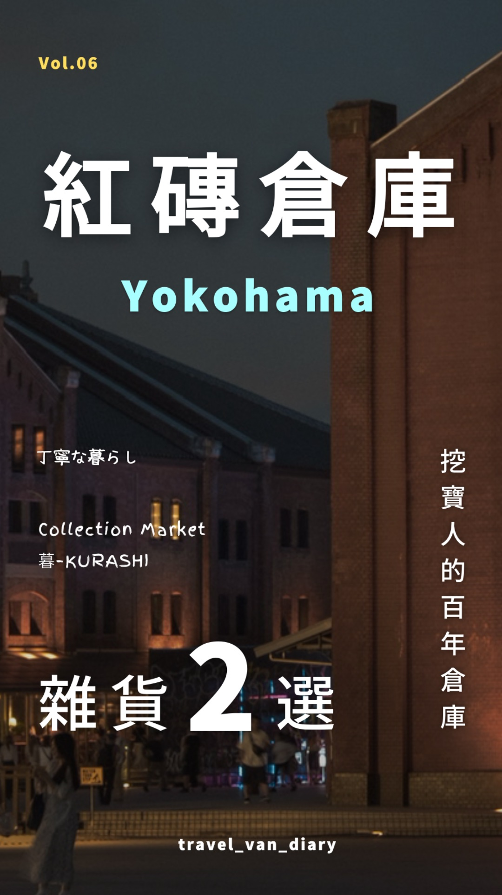
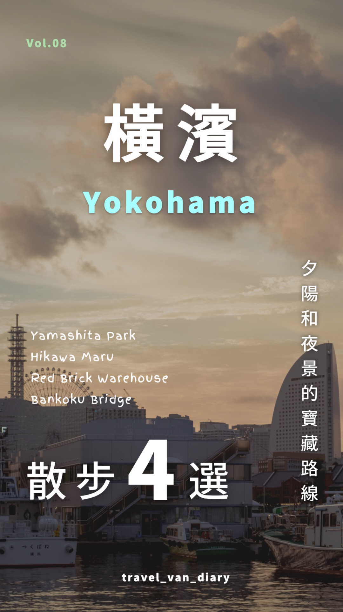

2026 年 7 月開始經營
從零開始，
持續累積內容成果。
以每週一支為目標，持續經營旅居與生活系列。
平均觀看3.31萬截至 2026.09.11 · 已提供的 9 支影片
觀看中位數0.15萬同一批 9 支影片的典型表現
皮皮小姐 × 袋鼠先生 · VIDEO EDITING PORTFOLIO
有節奏的剪輯，有溫度的畫面。
從日本旅居日記到品牌內容，讓好故事被更多人看見。
TRAVEL · LIFESTYLE · PODCAST HIGHLIGHTS
01 / WHY ME?
自己拍、自己剪、自己經營。
從內容成效到合作流程，都有實際經驗。
2026 年 7 月開始經營
以每週一支為目標，持續經營旅居與生活系列。
PM → CREATOR
前軟體接案公司 PM
全遠端工作經驗
從釐清需求、安排時程到整合回饋，
用商業思維，讓每個創意確實落地。
從挑選素材、安排字幕到拿捏音效，親自梳理每個細節，保留故事裡自然的表情與情緒。
02 / SELECTED WORKS
經營期間｜2026.07–2026.09
數據截至 2026.09.11 · 精選觀看前四名
01 · 玩具開箱
2026.07.28
02 · 玩具開箱
2026.08.26
03 · 景點選物
2026.08.17
04 · 生活日記
2026.09.04
剪輯拆解 / BEHIND THE CUT
選一支作品，沿著三個精選時間點，看文字、特效與畫面如何一起說故事。
01 / 剪輯筆記
用縮放模糊銜接扭蛋機與商品展示，讓畫面轉換更有動感。
在壽司旁加上黃色驚嘆線，帶出亮相時的可愛與驚喜。
放大「凍豆腐」並加上描邊，讓商品的趣味細節跳出畫面。
02 / 剪輯筆記
用驚嘆線與紫色文字標記抽到的款式，把開箱心情帶進畫面。
以圓形畫面重播迷你扭蛋機的操作，聚焦手部與出蛋細節。
把「紅蘿蔔」獨立放大，配合打開小物的畫面，突出意外的揭曉。
03 / 剪輯筆記
用「橫濱散記」搭配白色貼紙感標籤，建立旅行系列的辨識度。
店名、編號與店家小圖同時出現，逛店畫面也能清楚交代目的地。
以亮色小字搭配指引線，將視線帶向陳列細節，保留探索小店的趣味。
04 / 剪輯筆記
用黃色底色突顯補充資訊，讓白色字幕之間有清楚的閱讀層次。
將橫幅照片置於黑色留白中，從動態街景切換成安靜的攝影展示。
用直幅照片與留白呈現傍晚街景，讓旅程的節奏慢下來，停留在光影裡。
03 / CONTENT PILLARS
從你的品牌出發，
找到適合的內容切角。
皮皮小姐的行程攻略與口袋清單

紅磚倉庫景點介紹、店家曝光、選物推薦
剪輯重點：整理資訊、聚焦亮點、系列封面袋鼠先生的收藏與開箱日記
 東京必扭
東京必扭新品介紹、商品細節、收藏話題
剪輯重點：吸睛開場、揭曉節奏、重點特寫把兩人的日常，剪成有溫度的故事

橫濱散步生活風格、旅宿體驗、情境敘事
剪輯重點：音樂節奏、氛圍調色、情緒鋪陳將長談話整理成觀點清楚的短影音：金句擷取、字幕重點、段落節奏。
作品範例待補04 / BEYOND THE EDIT
把觀看後的興趣，
延伸成可以帶走、實際使用的資源。
05 / LET’S WORK TOGETHER
短影音 S
30–60 秒
Reels / TikTok / Shorts
適合快速傳遞一個精彩重點。
短影音 M
60–90 秒
Reels / TikTok / Shorts
讓資訊與故事有更多發揮空間。
精華剪輯
90 秒以上，依需求討論
節目精華 / 情境質感影片
梳理長內容，保留精彩片刻。
INCLUDED